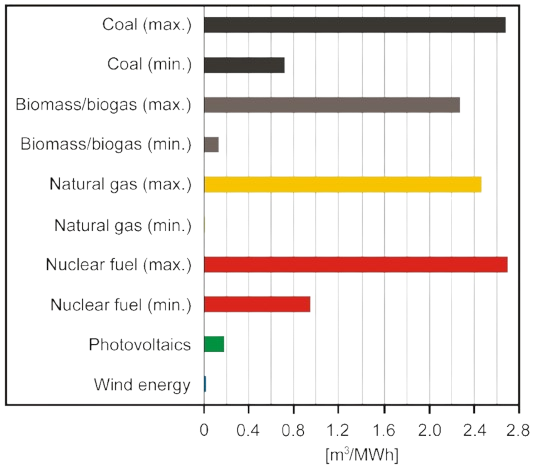

Our global energy system withdrew about 370 billion cubic metres of water in 2021. That's the size of 150 million Olympic swimming pools.
Energy consumes a substantial amount of water.
Our global energy system withdrew about 370 billion cubic metres of water in 2021. That's the size of 150 million Olympic swimming pools.
Why does this matter?
Water is a critical component in energy production due to its high specific heat capacity, phase change properties, and kinetic energy potential. In thermoelectric power plants including coal, natural gas, and nuclear facilities, water’s ability to absorb and transfer large amounts of heat, 4.18 joules/gram and degrees celsius to be specific, without rapid temperature changes makes it ideal for steam generation. When heated, water expands approximately 1,600 times its original volume, creating high-pressure steam that efficiently spins turbines. This change significantly enhances energy conversion efficiency. Additionally, water’s cooling abilities are crucial in preventing overheating in power plants. Compared to air cooling, water-based cooling systems are 10–100 times more effective, reducing energy loss and ensuring stable operation in power plants.
Hydropower takes advantage of water’s density (1,000 kg/m³) and gravitational potential energy, making it one of the most efficient and sustainable energy sources. Modern hydroelectric turbines achieve energy conversion efficiencies of 90%, significantly outperforming fossil fuel power plants and solar panels. Additionally, hydroelectric power produces zero carbon emissions, reducing environmental impact and reliance on fossil fuels. Pumped-storage hydropower further increases efficiency by storing excess electricity; water is pumped to a higher elevation when demand is low and released to generate power when demand peaks, acting as a natural energy battery.
As global energy demand grows, harnessing water’s unique properties will be crucial in improving energy efficiency and reducing environmental impact.
Usage:
Sustainability:
Advantages/Disadvantages:
Renewable and Clean Energy Source:
Water, particularly in hydropower, is a renewable resource that can generate electricity without depleting the water supply or producing harmful emissions. Hydropower plants, once constructed, can operate indefinitely as long as there is sufficient water flow, offering a sustainable and low-carbon energy solution compared to fossil fuels.
Efficient Cooling in Thermoelectric Plants:
Water plays a crucial role in cooling thermoelectric power plants, such as those using fossil fuels or nuclear energy. It absorbs heat from the plant's machinery, maintaining safe operational temperatures and preventing overheating. This cooling process helps to maximize the efficiency of these plants, ensuring they can run continuously at optimal performance levels.
Energy Storage and Grid Flexibility:
Water is essential for pumped storage hydropower, which allows energy to be stored for later use. During low demand periods, excess electricity is used to pump water to an upper reservoir. When demand increases, the water is released to generate electricity, offering grid flexibility and aiding in the integration of intermittent renewable sources like wind and solar.
High Water Consumption:
Power plants, especially those using thermoelectric systems, consume large amounts of water for cooling. This can put pressure on local water resources, particularly in water-scarce regions, potentially causing conflicts with agricultural or drinking water needs and negatively impacting the local environment.
Environmental and Ecosystem Disruption:
Hydroelectric dams, while providing renewable energy, can cause significant environmental impacts. Dams alter river ecosystems, disrupt local wildlife habitats, and affect fish migration patterns. The construction of large-scale dams may also lead to the displacement of local communities and wildlife, raising social and environmental concerns.
Vulnerability to Climate Change and Drought:
The availability of water for energy production, particularly in hydroelectric and thermoelectric plants, can be greatly affected by climate change. Droughts or changes in precipitation patterns can reduce water levels in reservoirs, limiting energy production. In thermoelectric plants, low water availability can also force plants to reduce output or temporarily shut down due to inadequate cooling capacity.
Niagara Falls:
Niagara Falls is not only one of the most famous natural wonders in the world but also a critical source of hydroelectric power. The Falls, located on the border between Ontario, Canada, and New York, USA, are a major natural water source, providing a consistent and powerful flow of water that is harnessed for energy production. The flow of water through the falls is diverted into power plants through tunnels and channels. As the water falls from the Niagara River, it creates a significant amount of energy due to its high flow rate and the dramatic elevation drop. This energy is captured by turbines that generate electricity, making Niagara Falls a key player in renewable energy generation in the region.
Niagara Falls has an average flow rate of about 85,000 cubic feet per second, making it one of the largest and most powerful waterfalls in the world. The falls have a vertical drop of around 167 feet, which contributes to the significant potential energy available for hydroelectric power generation. The power plants in the area, like the Sir Adam Beck Hydroelectric Generating Stations in Ontario, are capable of producing thousands of megawatts of power. The Sir Adam Beck Generating Station alone has a capacity of 1,760 MW.
Approximately 25% of Ontario’s electricity is generated through the hydroelectric plants at Niagara Falls, making it an essential component of the province’s power grid. The falls are particularly important as they provide a reliable and renewable source of energy, contributing to Ontario's goal of reducing its reliance on fossil fuels and minimizing carbon emissions. The electricity generated here powers homes, businesses, and industries in Ontario, as well as parts of the northeastern United States. The consistent flow of water and the advanced technology used in the power plants ensure that Niagara Falls remains a reliable and sustainable source of electricity for millions of people.
Applications:
Water plays a vital role in hydroelectricity generation by serving as the primary source of energy to drive turbines. Large dams store water at higher elevations, creating potential energy, which is converted into kinetic energy when released. As the water flows through turbines, it causes them to spin, driving generators that produce electricity. The amount of power generated depends on the volume of water and the height from which it falls, known as the hydraulic head. This process provides a renewable and efficient way to generate electricity without burning fossil fuels.
In addition to power generation, hydroelectric systems offer other benefits such as water supply management, irrigation, and flood control. Pumped storage plants use excess electricity to pump water to higher reservoirs, which can be released later to generate power during peak demand. Hydroelectric power is also highly flexible, allowing for quick adjustments in electricity production based on demand. By utilizing the natural flow of water, hydroelectricity remains one of the most reliable and sustainable sources of energy worldwide.
Water plays a crucial role in geothermal energy production, as it is used to extract and convert heat from the Earth's interior into usable energy. In geothermal power plants, water or steam is used to drive turbines connected to electricity generators. In dry steam and flash steam plants, naturally occurring steam or high-pressure hot water from underground reservoirs is directed to turbines, producing electricity. In binary cycle plants, hot water transfers its heat to a secondary fluid with a lower boiling point, which then evaporates to drive the turbine. This process ensures efficient energy conversion while utilizing the Earth's natural heat.
Apart from electricity generation, water in geothermal systems is also used for direct heating applications. Geothermal hot water is supplied to homes, greenhouses, and industries for space heating, agriculture, and other processes. Additionally, geothermal heat pumps use water to transfer heat between the ground and buildings, providing efficient heating and cooling solutions. By harnessing geothermal energy through water-based systems, this renewable resource offers a sustainable and eco-friendly alternative to fossil fuels for power and heating needs.
Water plays a vital role in nuclear energy production, primarily as a coolant and a moderator in nuclear reactors. In most nuclear power plants, water is used to absorb heat generated from nuclear fission reactions in the reactor core. This heated water either turns into steam or transfers its heat to another water system, which then produces steam to drive turbines connected to electricity generators. In pressurized water reactors (PWRs), water remains under high pressure to prevent boiling, while in boiling water reactors (BWRs), it directly turns into steam to generate power. This efficient heat transfer process ensures stable and controlled energy production.
Beyond electricity generation, water is also used in nuclear plants for radiation shielding, reducing the exposure of workers and equipment to harmful radiation. Additionally, it plays a key role in cooling spent nuclear fuel in storage pools, preventing overheating and ensuring safe disposal. Large amounts of water are also required for reactor cooling and steam condensation, making access to reliable water sources essential for nuclear power plant operations. This crucial application of water helps maintain the safety, efficiency, and sustainability of nuclear energy as a major source of low-carbon electricity.